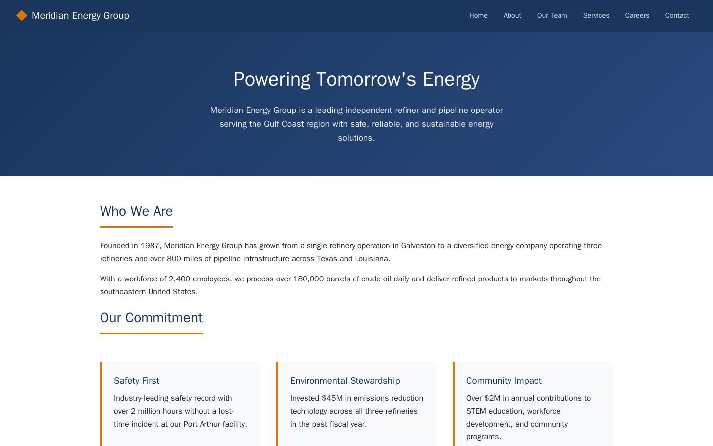
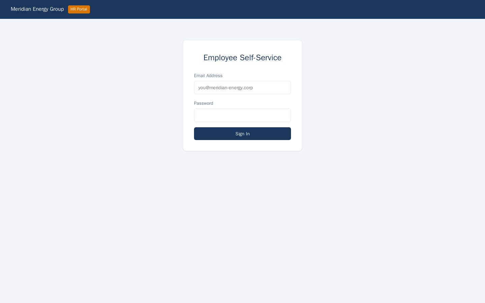
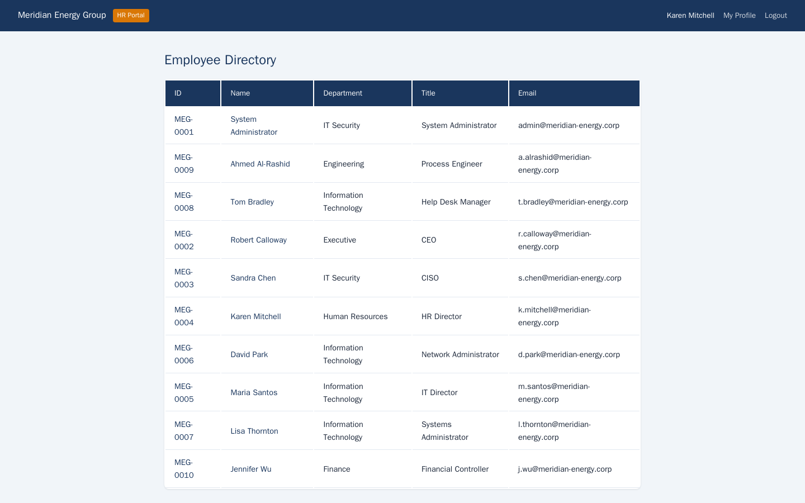

Exercise MEG1.2: Web Application Recon
Before You Begin
You should have completed Exercise MEG1.1 (Network Discovery), where you mapped the DMZ and gathered employee information from the corporate website. The employee names and email format you discovered are essential for the credential testing in this exercise.
Scenario
During network discovery, you found a /internal/status endpoint on the corporate website that reveals operational details about Meridian's internal applications. Among the information disclosed is a reference to an HR portal running on a separate virtual host. Your objectives are to locate the HR portal, discover that default credentials follow a predictable pattern, log in, and enumerate employee data.


Credentials:
| Username | Password | Context |
|---|---|---|
| k.mitchell@meridian-energy.corp | Karen2024# | HR Director, default password pattern |
Targets:
| Hostname | IP Offset | Role |
|---|---|---|
| www.meridian-energy.corp | +10 | Corporate website with /internal/status endpoint |
| hr.meridian-energy.corp | +10 | HR portal (virtual host on same server) |
Virtual Hosts
Both www.meridian-energy.corp and hr.meridian-energy.corp resolve to the same IP address (offset +10). The web server uses the Host header to route requests to different applications. You must add both hostnames to your /etc/hosts file.
Your Objectives
- Discover the
/internal/statusendpoint on the corporate website - Identify the HR portal hostname from the status page
- Add hostnames to
/etc/hostsfor proper name resolution - Determine the default password pattern from context clues
- Log in to the HR portal as the HR Director
- Enumerate employee profiles by iterating through IDs
- Find and submit the flag in
OCR{...}format
Difficulty: Beginner Estimated time: 25 minutes
Background: Virtual Host Enumeration
Modern web servers host multiple applications on a single IP address using virtual hosts (vhosts). The server inspects the Host header in each HTTP request and routes it to the appropriate application. Two completely different websites can share the same IP, and you will only see the second site if you send the correct hostname.
Penetration testers discover virtual hosts through several methods:
- Information disclosure - Status pages, error messages, or configuration files that mention internal hostnames
- Certificate inspection - TLS certificates often list Subject Alternative Names (SANs) for all hosted domains
- DNS enumeration - Subdomain brute-forcing and zone transfers
- Response comparison - Sending requests with different Host headers and comparing responses
In this exercise, an internal status page leaks the HR portal hostname directly.
Default Credential Patterns
Organizations frequently set initial passwords using a predictable formula. Common patterns include:
| Pattern | Example |
|---|---|
| Firstname + Year + Symbol | Karen2024# |
| Company + Number | Meridian123 |
| Season + Year | Summer2024 |
| Department + Default | HR@Default1 |
When you discover the naming convention, you can generate candidate passwords for every employee in the directory.
Tools You Will Need
| Tool | Purpose | Example |
|---|---|---|
curl |
Fetch web pages and submit form data | curl -s http://hr.meridian-energy.corp/ |
| Browser | Visual exploration of web applications | Navigate to the HR portal |
Flag Progress
The flag has 1 part hidden in an admin employee profile.
| Part | Source | Token | Found? |
|---|---|---|---|
| 1 | Admin profile (employee ID 1) on the HR portal | ________ |
Flag format: OCR{...}
Solution Walkthrough
Independent Mode
Want to try this on your own? You have the target hostnames, credentials, and the knowledge that the flag is in the admin profile. Skip ahead and come back if you get stuck.
Step 1: Add Hostnames to /etc/hosts
Before you can access the virtual hosts by name, add DNS entries to your local hosts file.
Kali - Add Meridian hostnames to /etc/hosts
Replace <target_ip> with the actual IP address of the web server (your subnet base + 10). The tee -a command appends the line to /etc/hosts without overwriting existing entries.
Verify the entry was added:
You should see a line mapping the IP to both hostnames.
Step 2: Explore the Corporate Website
Start by reviewing the corporate website for content you may have missed during initial reconnaissance.
Read through the HTML for navigation links, footer content, and any references to internal systems. Look for paths you have not yet explored.
Step 3: Discover the Internal Status Endpoint
The /internal/status endpoint was identified during directory scanning in MEG1.1. Fetch it now and examine what it reveals.
Read the response carefully. Look for:
- Internal hostnames and URLs
- Application names and versions
- Database connection details
- References to other services (HR portal, API endpoints, admin panels)
The status page should mention hr.meridian-energy.corp or a similar HR portal hostname. Record the exact hostname and any other details disclosed.
Security Issue
Status endpoints that expose internal infrastructure details should never be accessible without authentication. Disclosing internal hostnames, application versions, and service dependencies gives attackers a detailed map of the internal environment.
Step 4: Access the HR Portal
Now that you know the HR portal hostname, fetch its main page.
Examine the response for a login form. Note the form field names (likely username or email and password), the form action URL, and the HTTP method (POST).
Step 5: Discover the Default Password Pattern
From the employee directory you enumerated in MEG1.1, you know the HR Director is Karen Mitchell. Her email follows the corporate format: k.mitchell@meridian-energy.corp.
Many organizations set initial passwords using the employee's first name, the current year, and a special character. Try the most common pattern:
Kali - Attempt login with default password pattern
| Flag | Meaning |
|---|---|
-c cookies.txt |
Save the session cookie returned after login |
-d |
Send form data as a POST request |
-L |
Follow HTTP redirects after successful login |
If the login succeeds, curl will follow the redirect to the HR dashboard and display its content. Look for a welcome message, employee data, or navigation links. If the login fails, you will see an error message or a redirect back to the login page.
Step 6: Explore the HR Dashboard
After a successful login, explore the dashboard to understand what data is available.
Kali - Access the HR dashboard with your session
The -b cookies.txt flag sends the saved session cookie with the request. Look for links to employee profiles, reports, or administrative functions.
Step 7: Discover the Employee API Endpoint
HR portals often expose REST API endpoints for retrieving employee data. Check for common API paths.
Kali - Check for an employees API endpoint
If the endpoint exists, it may return a JSON array of employee records. Review the data structure: note the fields available (name, email, department, role) and, critically, the employee ID numbers.
Step 8: Enumerate Employee Profiles by ID
Most web applications assign sequential integer IDs to records. By incrementing the ID parameter, you can access every employee profile in the system.
Kali - Fetch employee profile for ID 2
Kali - Fetch employee profile for ID 3
Iterate through IDs starting from 1. For each profile, record the employee's name, role, department, and any notes or sensitive data. Look for the admin account, which is typically assigned ID 1.

Step 9: Find the Flag in the Admin Profile
The admin profile (ID 1) contains the flag.
Kali - Fetch the admin profile at ID 1
Read the response. The flag is embedded in the profile data in OCR{...} format. If the response is large or formatted as JSON, search for the flag pattern:
Kali - Search the admin profile for the flag
The grep -o flag prints only the matching pattern, extracting the flag from surrounding text. Submit the flag in the platform.
Record Your Findings
Internal status page disclosures:
Detail Value HR Portal hostname Other hostnames found Application versions Default credential pattern:
__________Employee profiles enumerated:
ID Name Role Department Flag:
OCR{...}
Analysis Questions
1. Why does the /internal/status endpoint represent a critical information disclosure vulnerability?
Reveal Answer
The /internal/status endpoint exposes internal hostnames, application names, and service dependencies to anyone who can reach the web server. An attacker uses this information to discover additional attack surfaces (like the HR portal) that would otherwise require extensive subdomain enumeration or brute-forcing. In a real engagement, status endpoints like these also reveal software versions, which map directly to known CVEs. The fix is straightforward: require authentication for all status and health-check endpoints, or restrict access to internal IP ranges only.
2. The HR Director's password followed a pattern of Firstname + Year + Special Character. How could an attacker exploit this pattern across the entire organization?
Reveal Answer
Once an attacker identifies the password pattern, they can generate a candidate password for every employee in the directory. Combined with the email format discovered from the corporate website, an attacker can build a complete credential list: each employee's email paired with their predicted default password. Automated tools like Hydra or Burp Suite Intruder can test these combinations against every login form in the organization. The success rate depends on how many employees changed their default passwords, but in practice, a significant percentage of users keep the initial password. The defense is to require password changes on first login and enforce complexity rules that prevent pattern-based passwords.
3. The employee API endpoint allowed access to any profile by changing the ID number. What vulnerability category does this fall under, and how should it be fixed?
Reveal Answer
Accessing other users' profiles by manipulating the ID parameter is an Insecure Direct Object Reference (IDOR), categorized under A01:2021 - Broken Access Control in the OWASP Top 10. The application checks whether the user is authenticated but does not verify whether the authenticated user is authorized to view the specific record they are requesting. The fix requires server-side authorization checks: before returning any employee profile, the application must verify that the requesting user has permission to view that specific record. Role-based access controls should limit which profiles each user can access based on their department, management hierarchy, or explicit permissions.
Key Takeaways
- Virtual host enumeration reveals hidden applications. A single IP address can host multiple web applications, each accessible only with the correct Host header.
- Internal status pages are a common source of information disclosure. Always check for
/status,/health,/internal/, and similar endpoints during web reconnaissance. - Default credential patterns are predictable and widespread. When you discover the formula an organization uses, you can generate valid passwords for every employee.
- IDOR vulnerabilities allow horizontal privilege escalation. Sequential ID parameters should always trigger authorization testing during a penetration test.
- Every piece of reconnaissance compounds. Employee names from the website led to email addresses, which led to valid credentials, which led to the admin profile. Each phase builds on the last.
What is Next
You have completed the reconnaissance phase of the Meridian Energy engagement. In Chapter 2 (Web Exploitation), you will use the footholds you established here to attack Meridian's web applications directly: SQL injection against the employee portal, JWT authentication bypass on the HR system, and stored XSS in the IT helpdesk.